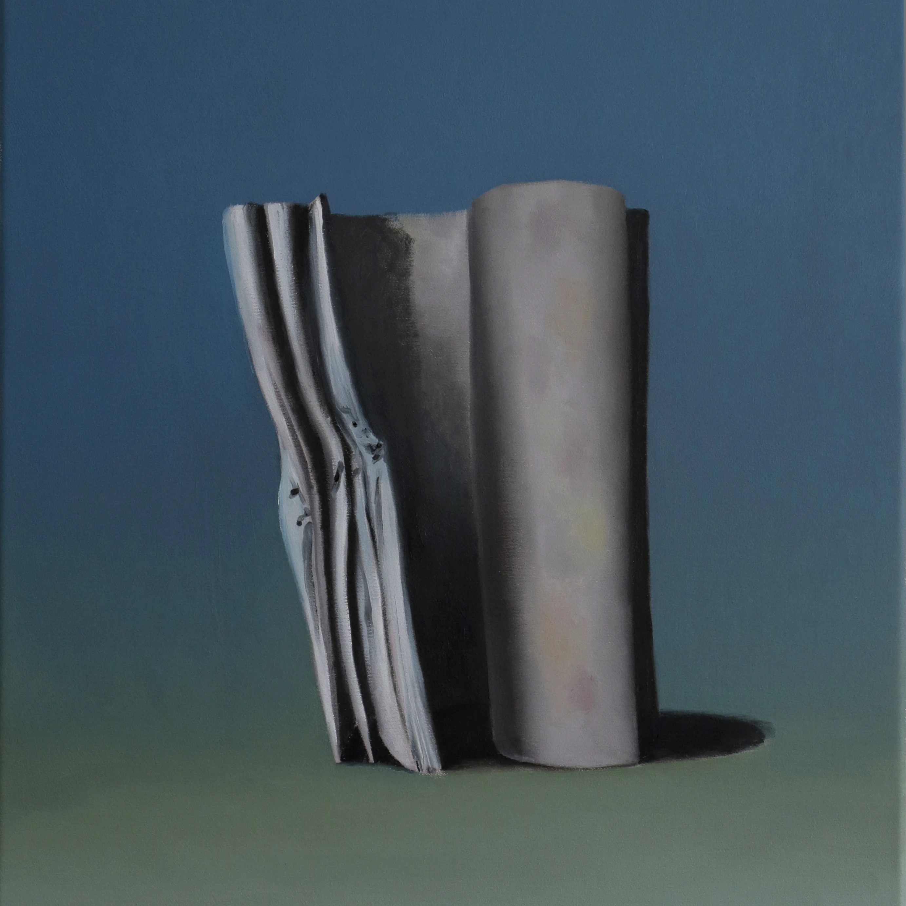
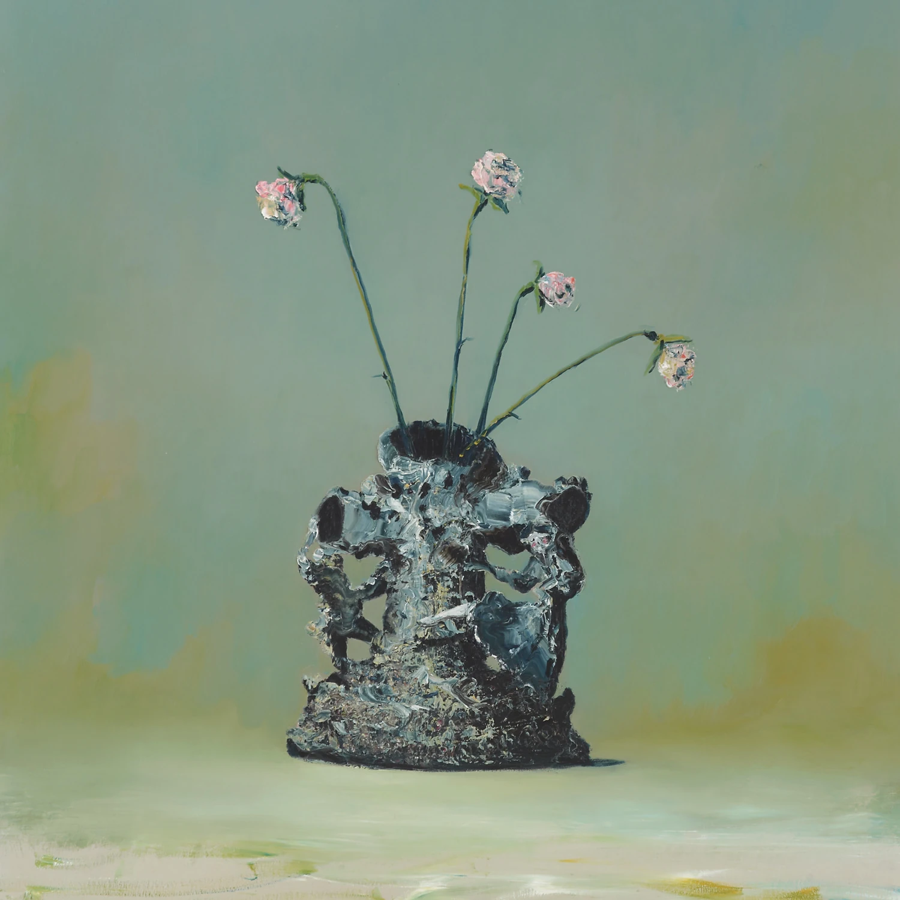
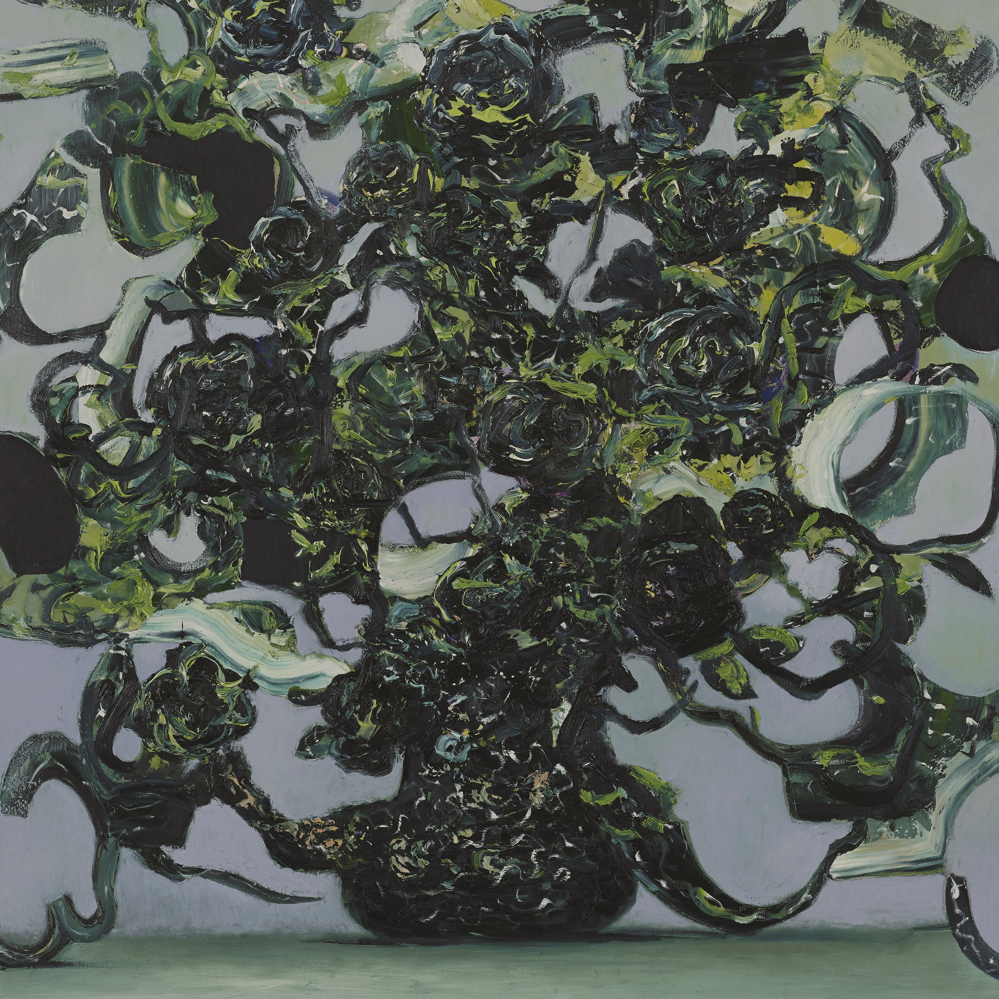
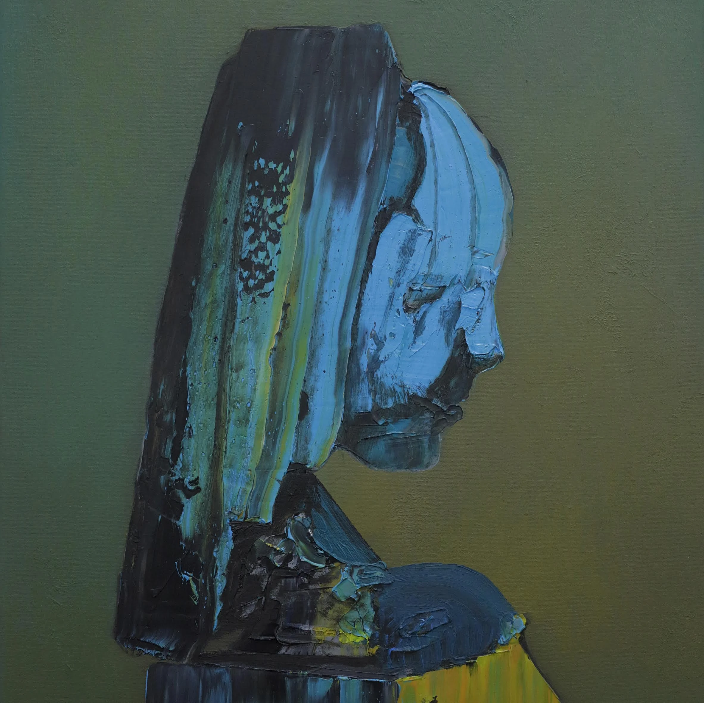
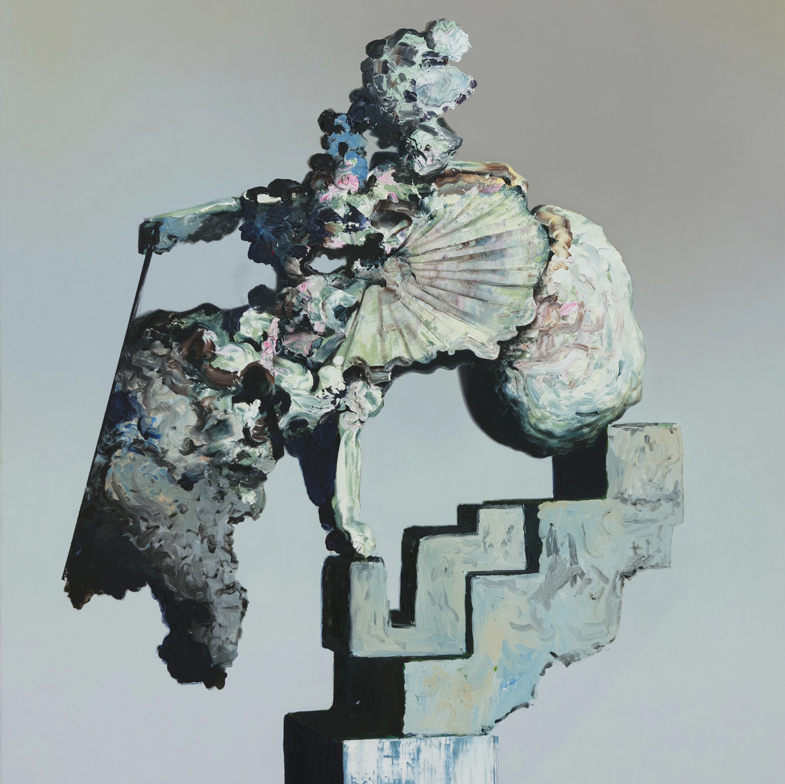
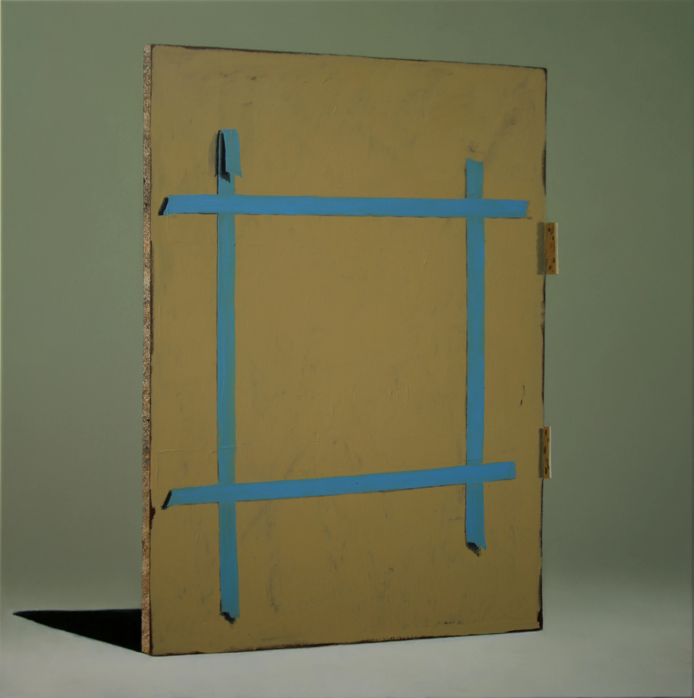

艺术回廊 I - 死亡的表现与体验
本文最后更新于 2025年5月26日 下午
艺术回廊 I - 死亡的表现与体验
Introduction
死亡是各类艺术作品中常见的母题，例如传统宗教画中的耶稣之死、卡里古拉之死、《雷雨》中周家的分崩离析等。这些作品中的死亡通常用以表现人物的某个特质，来间接表达主题。这次选择的作品则聚焦于死亡本身，它们并非表现某个特质，而是描述一种普遍性的腐朽瓦解崩坏，相较于戏剧性的死亡更加贴合我们现实中的死亡。
The Disintegration Loops

- 艺术形式： 音乐 - 专辑
- 作者： William Basinski
- 年份： 2002-2003
- 风格： Tape music, Ambient, Drone
- 色调： 灰偏白
关于这张专辑的来历其实已经是老生常谈了。1980 年代 William Basinski 构建了一系列磁带循环（Tape Loop），它们由一个从轻松听音乐站（Easy Listening Station）捕获的经过处理的音乐片段组成。2001 年，他决定将这些磁带数字化以保存，将这些磁带放在数字录音机上循环运行（保证采样精度）来录制磁带的内容。过了一会，他惊讶地发现这些磁带在循环的过程中逐渐碎裂，而音乐随着磁带的碎裂也逐渐开始蜕化。他决定将这些细微的变化记录下来。
Tape Loop 是一个可以无限循环播放的磁带。它的制作方法是剪下一小段磁带首尾相接成一个小环后放回去，因此单个循环通常只包含几秒音频。这种磁带通常被用于制作 Ambient。
Easy Listening 则是一种在 1950 年代至 1970 年代盛行的音乐类型，旨在给予听众一种轻松的氛围，通常被用作公共场所的背景音乐。和作为精神继承者的 New Age 类似，Easy Listening 同样是一个大杂烩，不太好描述其特征，大概类似于使用铜管乐器与弦乐器的简单爵士乐。
不久，911 发生了。他在布鲁克林的屋顶上，将摄像机放在三脚架上对准了闷热的曼哈顿下城，捕捉了那天白昼的最后一个小时。9 月 12 日，Basinski 观看了昨天的影片，并同时播放了之前记录的音乐。难以置信的忧郁音乐、逐渐褪色和废墟的画面意外地融为一体。这些音乐从意外之作突然获得了意义：它们将成为那一天的挽歌。最终，长达一小时的视频与声音以 DVD 形式发行，视频中的一帧则最终变成了《The Disintegration Loops》的封面。
在不了解这个背景故事之前去听《The Disintegration Loops》的第一音轨《Dlp 1.1》，恐怕只会感受到无趣：因为最初的几次循环几乎毫无变化，只有几个简单的哀伤的铜管乐音，让人怀疑这些作品只不过是简单重复的粗制滥造之作。如果仅是这样，《The Disintegration Loops》大概只会是一张随处可见的 Ambient 专辑，绝无可能成为传世之作而进入 911 博物馆。但是如果你了解这张专辑的制作过程，或者耐着性子听下去，你一定就能听出循环之间的不同：乐音之间逐渐插入了噪点，紧接着的是乐音的削弱变形，逐渐变为完全不同的乐音，最终迅速恶化而落入一片空白。
其他的音轨也是类似。《Dlp 2》将你置身于一个神秘的金属空间之中，随著时间的推移四周的墙壁不断向你推进而压迫着你，随后又逐渐崩坏。《Dlp 3》的循环则像是在中世纪的树林中观看夕阳逐渐下沉，阳光逐渐变得支离破碎。而最具讽刺意味的是，《The Disintegration Loops》 最初以四盒黑胶唱片的形式发售，而黑胶唱片同样是一个会逐渐劣化的介质：描述瓦解的音乐同样也会瓦解。
《The Disintegration Loops》 描述了普遍意义上的事物的“死亡”，它所描述的对象不仅仅是磁带循环本身，是双子塔与双子塔里的人，是 911 事件，更是这世界上一切有形与无形之事。这张专辑以一种特殊的视角客观地描述了“死亡”本身的过程与发展，描述了一种压倒性的恐惧与压抑。最终，在音乐的最终空白之处，它将我们拉回现实，使我们意识到自己的存在。
Reference
[1] William Basinski: The Disintegration Loops Album Review | Pitchfork
[2] Tape Loops: How to Make a Tape Loop in 9 Steps | LANDR
Everywhere at the end of time

- 艺术形式： 音乐 - 专辑 & 绘画 - 油画
- 作者： The Caretaker (James Leyland Kirby) & Ivan Seal
- 年份： 2016-2019
- 风格： Dark Ambient, Experimental
- 色调： 黑
《Everywhere at the end of time》是 James Leyland Kirby 以 The Caretaker 名义发布的第十一部作品，涵盖了六张按照阶段划分的、在 2016-2019 之间陆续发行的录音室专辑，来摹拟阿尔茨海默病病患从发病步入死亡的过程。专辑的发布时间与音乐中主人公病情的发展相对应[1]。专辑封面由 Ivan Seal 绘制，同样是这系列的重要组成部分之一。前三个阶段的风格类似于前作《An Empty Bliss Beyond This World》，由短篇 Ambient 为主；但到后三个阶段急转直下，变为由多个片段拼接而成的超长篇 Ambient。
“The Caretaker”（意为看守人） 源自《闪灵》。这个名义起初用于探索一种闹鬼的气氛，但随后转为探索记忆的恶化与丧失。
起初，Kirby 担心会被外界扣上自命不凡的骂名，想打消创作本作的念头；然而最终他对之投入的时间远超以往的作品。而这部作品亦在音乐史上画下了浓墨重彩的一笔，如果不出意外的话它将成为后世音乐的重要节点之一。
Stage 1 (Track 1-12, A+B)

STAGE 1 - (A+B)
Here we experience the first signs of memory loss.
This stage is most like a beautiful daydream.
The glory of old age and recollection.
The last of the great days.
专辑的封面则表达记忆如纸张一样尚且完整，但是出现了一些模糊不清的褶皱；而这些褶皱将会逐渐扩大，使纸张出现缺损。
初次听《Stage 1》，相比大家对于 Track 1 都不会陌生：《It’s Just a Burning Memory》经常出现在各类后室的视频中，但是很少有人知道这段旋律析出自一首描述阿尔兹海默症的歌。在 AD 最开始的阶段，记忆丧失还难以察觉，回忆大多都是“美好的白日梦”。与《An Empty Bliss Beyond This World》类似，《Stage 1》的音乐大多采样自 1920s - 1930s 的音乐，大部分内容都是不断循环的，并通过改变音高、混响、泛音等操作使之改变以更接近回忆的真实情况。这个阶段的音乐总体上还算是轻松愉快，但是已经隐隐出现了几丝担忧。
《It’s Just a Burning Memory》的开头使用了 Al Bowly《Heartaches》的采样，而这首歌的旋律与歌词贯穿了整个系列。从 A1、C3、E2、F4、F5、G1，这个采样片段的不断变化暗示着患者记忆的逐渐崩碎。
Stage 2 (Track 13-22, C+D)

STAGE 2 - (C+D)
The second stage is the self realisation and awareness that something is wrong with a refusal to accept that. More effort is made to remember so memories can be more long form with a little more deterioration in quality. The overall personal mood is generally lower than the first stage and at a point before confusion starts setting in.
专辑的封面则是一个千疮百孔的花瓶，暗示记忆已经逐渐破碎并且变得似是而非，但是花瓶中的花表明仍有一些美好的记忆尚且存在。
《Stage 2》则被描述为“自知出现了问题，但是拒绝接受这一点而努力抗拒”。相较于《Stage 1》，这部分的情绪明显变得低落了许多，并伴有很多突然的结束，暗示记忆的突然断裂。每个 Track 的时长变得更长，但是音乐变得更加怪异；患者尝试努力回忆以对抗，但是仍然无法阻止记忆的变形，甚至加剧了记忆的变形。《Surrendering to Despair》与《Last Moments of Pure Recall》则表明了患者对于记忆丧失的感知与悲痛。
Stage 3 (Track 23-38, E+F)

STAGE 3 - (E+F)
Here we are presented with some of the last coherent memories before confusion fully rolls in and the grey mists form and fade away. Finest moments have been remembered, the musical flow in places is more confused and tangled. As we progress some singular memories become more disturbed, isolated, broken and distant. These are the last embers of awareness before we enter the post awareness stages.
这个封面展示的是一种扭曲到极致的海带。上一张封面的花瓶已经完全破碎且变得扭曲，而记忆可能尚有留存但是大多已经扭曲，记忆之间的联系也逐渐消失。
这也是 《Stage 3》想要表达的，“在完全卷进困惑、灰色迷雾形成并消逝之前，一些最后的连贯记忆”。各种来自《Stage 1》和《Stage 2》的采样以沉闷的形式出现在《Stage 3》，表现出患者增长的绝望以及挣扎。Track 同样普遍以中断结尾，暗示记忆之间的联系已经破碎。歌名同样抽象，是《Stage 1》《Stage 2》《An Empty Bliss Beyond This World》的混杂。Kirby 认为这个阶段还算幸福，患者没有意识到他已经得了痴呆。
Stage 4 (Track 39-42, G+H+I+J)

STAGE 4 - (G+H+I+J)
Post-Awareness Stage 4 is where serenity and the ability to recall singular memories gives way to confusions and horror. It’s the beginning of an eventual process where all memories begin to become more fluid through entanglements, repetition and rupture.
对美术史稍微有些了解的人想必一眼就能看出，这幅画的原型是《戴珍珠耳环的少女》。但是这幅画的人像已经完全扭曲，失去了可以辨认的特征，甚至蜕化为了物品。这也是 AD 最广为人知的症状之一：患者无法辨认过去所熟悉的人。
我第一次接触这张专辑就是《Stage 4》的第一音轨《G1》。可以说没有前面三个 Stage 的铺垫《G1》只能是一团最纯粹的噪音，只有听过前三个 Stage 的铺垫你才能理解《Stage 4》是一种对“后意识状态的描述”。作为转折点的《Stage 4》可以说是这个系列中最具特色的一张专辑。题名《Post Awareness Confusions》表明患者在初次进入后意识阶段的困惑与不解，患者对于自身与周围的存在意义变得模糊而混乱，丢失了时间与空间的逻辑关系。而《I1 - Temporary Bliss State》则是暂时的清醒。
《G1》中患者死死地抓着《Heartache》的记忆不放，拼命使自己的记忆不去破碎；但是来自前三个 Stage 的片段与各种来自记忆的片段胡乱地拼接在一起，表明患者已经无力回天。《H1》则是彻底的崩坏，记忆已经完全受损变形，患者被巨大的恐惧与绝望压倒。14:24 - 16:30 的Hell Siren 段清晰地表现了记忆完全被恐惧绝望笼罩后的景象，患者意识到自己已经无法回忆起正确的记忆，为绝望所笼罩。《I1》则是暂时的清醒，是美好的假象，也是患者生命中最后记忆连贯的时期。紧接着的是《J1》，是暴风雨前的平静，尽管记忆仍然破碎但是相对舒缓，使患者有了自己可以恢复的错觉。
但是紧随其后的就是《Stage 5》，远超以往的破碎，记忆彻底融合在一起燃烧。
什么是噪音音乐(Noise)？你应该去听一听 Tim Hecker 的《Prism》，这样你就能理解为什么我说如果没有铺垫《G1》就是最纯粹的噪音 。
Stage 5 (Track 43-46, K+L+M+N)

STAGE 5 - (K+L+M+N)
Post-Awareness Stage 5 confusions and horror.
More extreme entanglements, repetition and rupture can give way to
calmer moments. The unfamiliar may sound and feel familiar.
Time is often spent only in the moment leading to isolation.
在整个系列中，《Stage 5》的封面是最抽象的一张。或许是一个女性和一个大理石台阶？但是已经完全说不上来这是什么了。
《Stage 5》也是这样，“更极端的纠缠、重复及断裂，可以让位给较为平静的心境”。这个阶段的音乐充斥着各种各样的似乎毫无关联的采样，有时候又变得平静。这个阶段描述了 AD 的最终阶段：记忆完全混杂在一起并且逐渐消退，随着病情地发展突然丢失一大块记忆，就像《The Disintegration Loops》一样。
Stage 6 (Track 47-50, O+P+Q+R)

STAGE 6 - (O+P+Q+R)
Post-Awareness Stage 6 Is without description.
画板还在那里，但是我们已经无法看见任何画的内容了，只能看到画板背后的胶带，也就是尝试挽回记忆的记忆。
《Stage 6》的音乐几乎为虚无所覆盖，音乐仍然存在但是距离你已经非常遥远了。最后一曲《Place in the World Fades Away》的最后6分钟是全系列的高潮，有着清晰可闻的合唱声，采样自巴赫的《路加受难曲》男高音咏叹调 “Lasst Mish Ihn Nur Noch Einmal Küssen”。患者正在经历回光返照，意识重回正常，但是距离死亡也很近了。而最后一分钟则是完全的寂静，表明患者已经死去。
总结
如果说《The Disintegration Loops》 描述了普遍意义上的事物的“死亡”，那么《Everywhere at the end of time》就是在具体地描述一个人的死亡，并且是以第一人称描述了其过程。按照 Kirby 的说法，在《The Disintegration Loops》描述死亡过程（What）的基础上，《Everywhere at the end of time》则揭示了死亡的原因与方式（Why and How）。
Reference
[1] Everywhere at the End of Time - Wikipedia
[2] 献给历史上最“黑暗”的音乐…（Everywhere at the end of time）乐评
[3] Everywhere at the End of Time (Main) | The Caretaker Wiki | Fandom
难自禁 Can’t Help Myself
- 艺术形式： 装置艺术
- 作者： 孙原&彭禹
- 年份： 2016 - 至今
- 材料： 工业机器人，不锈钢和橡胶，含纤维素醚的有色水，视觉检测控制系统，铝制框架结构亚克力墙
- 色调： 灰
孙原和彭禹的新作《难自禁》（2016）引入智能机器人和视觉检测控制系统，将通过科技和网络不断机械化、智能化的全球现实纳入他们的艺术探索中。在展厅里观众可以看到一个安置在基座上的大型机械手臂，其前轴上装有一把铲子。机器臂会沿着基座旋转，监视一滩深红色不明粘液。一旦粘液溢出边缘，机械臂就会将其铲回。经过一段时间的反复来回铲动，液体在地面上留下斑驳痕迹，仿佛是干涸残留的血迹，这场景不难让人联想到边界防卫和领土纠纷中的监控和战争，以及其中的血腥和残暴。无论是在现实生活还是在这件作品中，如此的机制都企图操控和防卫人为的政治界限，而这些界限的划定从来都是武断的，它们不断出现、消失。除了在边境冲突和战争中引发流血和牺牲，这些安保机制也在影响着我们的日常生活——从遍布城市空间的摄像头，到既记录和分享我们生活又监控并操纵我们行为的智能手机。多层监控也指向了人与机器间控制与被控制的关系：当人类野心勃勃发明机器并设计软件控制它们时，自己却也不可避免地成为了被监控的对象。
—— 古根海姆美术馆 《故事新编》
这是这件装置艺术 2016 年初次展出时艺术家的解释；但是这个装置的独特之处，就是拥有不同生活经历的人会有完全不同的角度与感受。我将这部作品放在这里，显然取的就不是艺术家的理解了。从上面的视频可以很清晰地看出从 2016 年到现在这件装置艺术的状态已经发生了很大的改变。机器人的部件已经老化，在运作时会发出金属锈迹之间的刺耳摩擦声音；传感系统与运动系统也出现了故障，开始出现一些意料之外的行动。最初这个机器人被编码为有人观察时有概率到处挥舞机械臂；但是现在由于传感器故障，即使无人观察这个机器人也会手舞足蹈。
从某种角度上讲，作品中央的工业机器人与《Everywhere at the end of time》描绘的老人是非常相似的。他们都在试图挽回某样东西（记忆 & 深红色液体），但是却阻止不了这样东西的离去的进程；在人前尽力地表现自己无事，却掩饰不了即将崩溃的事实。等到现实逐渐恶化到无法挽回的程度，人和机器同样无法认识到他人，陷入疯狂与尖叫之中；而那样东西也早已变得支离破碎、到处都是。从 AD 或这个装置产生的那一刻，人与机器的行为都已经被某样东西裹挟了，最终结局都只会是崩坏与死亡。
Reference
[1] Can’t Help Myself-SUN YUAN & PENG YU
Conclusion
尽管艺术形式与角度有所不同，但是不同的艺术家所理解的死亡存在着共通之处。死亡不是一种突然性的痛苦，而是渐进加深的痛苦，最初难以察觉但最终会演变为压倒性的痛苦。面对死亡，人最初会不去察觉或刻意忽视，随后尝试以各种方式激烈地反抗，但最终都会为命运之轮所碾过而瓦解或屈服。或许在经历真正的死亡时，我们无能为力去改变事实；但是透过这些作品，我们可以减轻对于死亡的恐惧，并以更珍视的态度去对待我们所拥有的生命。
Footnotes
- 来源不详的说法。 ↩